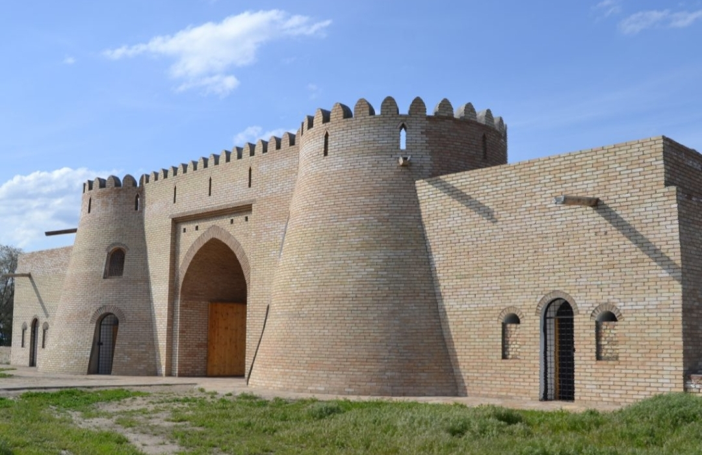

Рассказ обо мне
Меня зовут Курбанов Рамиль Рашидович, на данный момент мне 17 полных лет и я изучаю программирование на платформе GeekBrains В этом году я закончил одиннадцатый класс, и теперь я полностью отдаю себя курсам в GeekBrains
Проживание
Я проживаю в стране Казахстан а именно в городе Шымкент, это Южный Казахстан, если вам инетерсно я бы хотел поделиться фотографиями своего города, а так же рассказать про его историю :)
История моего города
История города начинается с 12 века, долгое время он переходил от одних завоевателей к другим, пока в 19 веке город не взяли штурмом русские войска и он вошел в состав Российской империи, потом Советского Союза. В 1991 году стал областным центром Южно-Казахстанской области Республики Казахстан.
Этимология названия города происходит от двух иранских слов: "кент", что означает город, местность и "шым" - в основном переводят, как луг, трава.
Достропримечательности Шымкента
Монумент Байдибек би
>Наверное, это самое популярное туристическое место в городе. Памятник Байдибеку би установлен в 2012 году в северной части Шымкента, на холме, вздымающемся ввысь на 220 м. Общая высота композиции составляет 23 м, из которых сама статуя деятеля — 10 м.
Согласно истории, Байдибек би — это выдающийся казахский бий, который приложил очень много усилий для объединения народа Казахстана. Он был мудрым, честным и рассудительным человеком, способным решить любой вопрос.
Ущелье Сайрам-Су
Живописное ущелье Сайрам-Су считают одним из самых красивых каньонов южного Казахстана. На 2350 кв. метрах находятся ледниковое озеро, котловина которого своей формой напоминает гитару.
Вода здесь крайне холодная — за счёт того, что пополняется из подземных источников. Цвет озера имеет интересную особенность: он четко разграничивается на бирюзовый и голубой.
Причём эту границу видно при любых погодных условиях. По легенде, когда-то влюбленная пара соединила свои чувства водами этого водоема. От Шымкента до Сайрам-Су нужно ехать около полутора часов.
Родник Кошкар-Ата
Кошкар-Ата представляет собой родник с кристально чистой водой. В отличие от других природных достопримечательностей он находится прямо в центре Шымкента.
Раньше местные считали источник и его берега святыми и приходили сюда, чтобы совершать национальные обряды. По древним поверьям, когда-то здесь жил мудрец и знахарь по имени Кошкар-Ата. Он лечил людей от многих заболеваний с помощью лекарственных трав и целебной родниковой воды.
Источник: https://tur-ray.ru/shymkent-attractions.html
Старые постройки Шымкента

Шымкент в наше время
Оформление моей странички
Возможно вы задаетесь вопросом, почему я выбрал именно такое оформление старнички? Я объясню, Шымкент считается зеленым городом и даже зимой у нас под снегом растет зеленый газон)
От сюда я и взял такой цвет странички, я бы сделал все еще лучше если бы имел достаточно опыта в этом, ну ничегО! Наверстаем